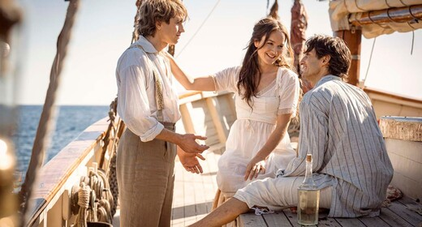
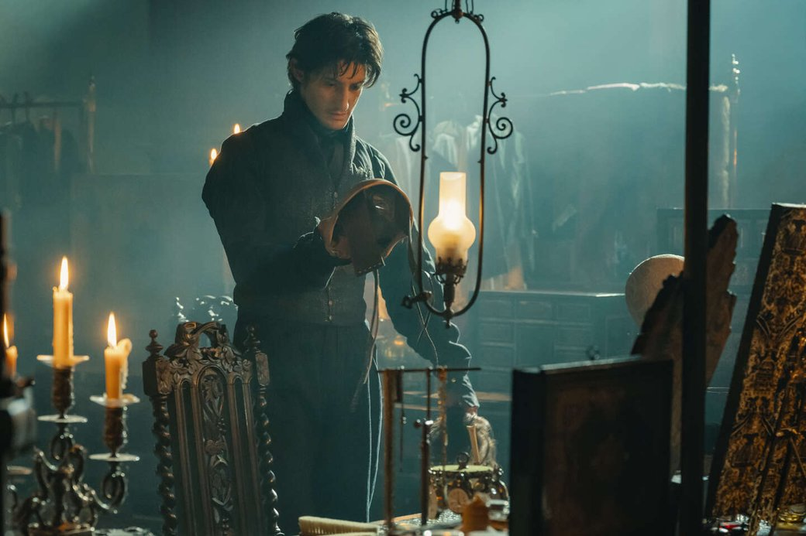
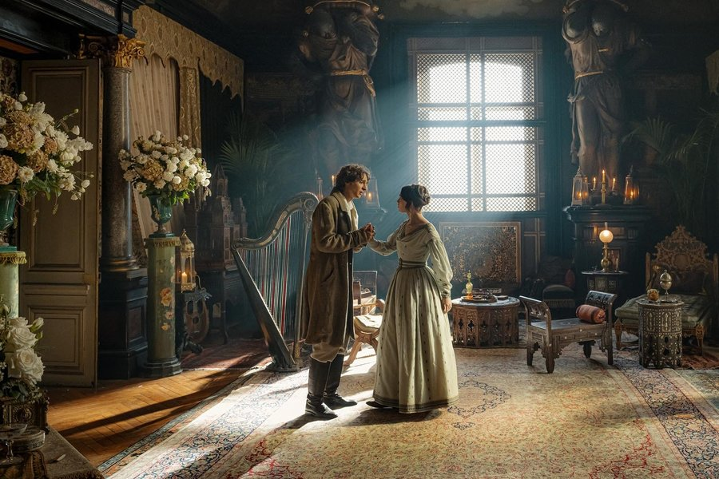

Le comte de Monte-Cristo/Граф Монте-Крісто (2024)
Молодий Едмон Дантес (П'єр Ніне) ось-ось стане капітаном і чоловіком
пристрасно коханої Мерседес (Анаїс Демустьє). Однак, не давши молодим
завершити весільний обряд, прямо з церкви юнака забирають під арешт,
звинувачуючи у бонапартизмі. На довгі роки герой стає ув'язнений в тюрмі
на острові, де прихильна доля зводить його з абатом Фаріа (П'єрфранческо
Фавіно). Чоловік ділиться із сусідом важливою таємницею про острів, на
якому заховані незліченні скарби, здатні забезпечити безбідне життя.
Зумівши через багато років втекти із замку Іф, Едмон знаходить скарб і
починає будувати план помсти і втілювати його в життя.

Нову екранізацію роману Олександра Дюма створено людьми, які писали
сценарій до нещодавньої версії «Трьох мушкетерів» із зірковим складом
французьких акторів голлівудського масштабу: Єва Грін, Венсан Кассель,
Ромен Дюріс, Луї Гаррель, Вікі Кріпс. «Граф Монте-Крісто» значно зменшив
статусність каста, але знайшов набагато більше. Режисери Олександр де ла
Пательєр і Матьє Делапорт, ймовірно, провели роботу над помилками і
представили глядачам справді гідну версію одного з найпопулярніших
французьких романів.
Перше, що впадає у вічі, — грамотний підбір виконавця головної ролі. П'єр
Ніне завдяки своїй універсальній вневіковій зовнішності чудово виглядає і
в образі повного надій у майбутнє двадцятирічного моряка Едмона, і в
образі графа, який вже побачив похмурий бік життя. Хронометраж в 3 години
здається гігантським, відповідно двотомнику Дюма. На щастя, фільм виглядає
динамічно і лаконічно. Декілька сцен справді грішать затягнутістю, але
бажання відірватися від екрану і подивитися на годинник не виникає.
Драматургічно екранізація роману постає цільною історією: радує, що творці
не пішли второваною доріжкою перетворення великої книги на серіал або
розділення стрічки на частини заради збереження кожної деталі оригіналу.
Зміни у сюжеті дозволили сценаристам не лише вмістити великий твір у рамки
одного повного метра, а й адаптувати класичний текст до сучасних реалій та
згладити спірні моменти епохи, що відображені у романі. Гайде (Анамарія
Вартоломеї) вже не невільниця графа, а його помічниця та напарниця у
справі помсти спільним кривдникам. Камердинер тепер не раб із відрізаним
язиком, а італієць із грізним поглядом (Абде Маціане). А у прокурора де
Вільфора (Лоран Лафітт) на місці батька-судді з'являється сестра (Адель
Сімфаль).

Перевагою фільму є й те, що, незважаючи на значне скорочення, сюжет
залишається зрозумілим не лише тим, хто читав роман і знає напам'ять
історію графа, а й публіці, яка не знайома з першоджерелом. І справді,
«Монте-Крісто» — історичний блокбастер у класичному прочитанні жанру:
значний розмах і детальне опрацювання інтер'єрів і костюмів, музика, яка
не заграє з актуальними жанрами, гарні локації, захоплюючі загальні та
великі плани.
Реверансом у бік сучасності стає хіба що технічне оснащення гігантського
замку графа Монте-Крісто. Легким рухом руки стіни розкриваються і
перетворюються на тренувальну кімнату для стрілянини. При всьому
консерватизмі та класичному підході фільм примудряється виглядати досить
виразно та стильно, не нагнітаючи, а розряджаючи атмосферу великого
роману. Чіткі силуети вимальовуються за допомогою плащів, капелюхів, масок
та тростин.
Білі зуби після довгих років у сирій брудній ямі замку Іф разом із
миготливими чистими вбраннями та шевелюрами на початку XIX століття,
звичайно, можуть насторожити прискіпливого глядача, але засуджувати за
недостовірність авторів зовсім не хочеться. Новий «Граф Монте-Крісто» — це
грандіозне глядацьке кіно, в якому відчувається кожен вкладений євро
бюджету найдорожчого французького фільму року. Підкуповує саме
універсальність стрічки та її доступність для аудиторії всіх мастей, а не
лише для вибраних синефілів чи філологів.

«Граф Монте-Крісто» - гідна екранізація, яку дивишся на одному диханні і
зачаровує. Вона здатна загубитися на тлі шокуючих та помітних прем'єр та
фестивальних хітів, але пропустити її буде великою помилкою для любителів
пишних драм. Олександр де Ла Пательєр і Матьє Делапорт створили масштабне
кіно, яке ідеально підходить для перегляду на великому екрані. Воно
примудряється зберегти суть і передати дух вагомого оригіналу, не залишити
в дурнях глядачів, які не читали оригінал, і одночасно показати динамічну
захоплюючу історію.